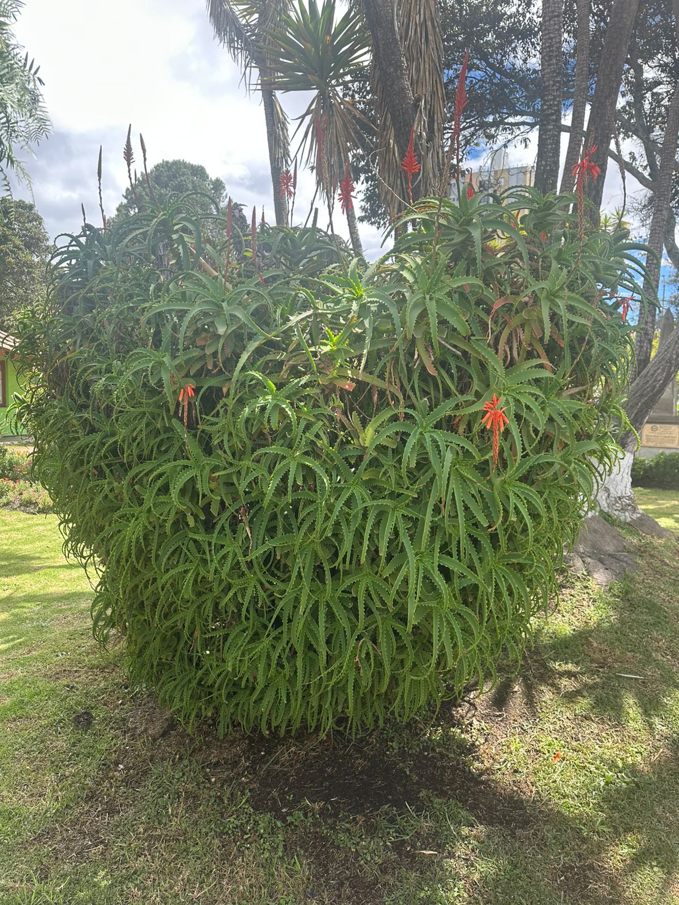

← Volver

Aloe Arborescens
Descripción
Es una planta suculenta y arbustiva, conocida tambien "Sabila Candelabro" o "Aloe de Candelabro", se cultiva ampliamente como planta ornamental y medicinal es originaria del Sur de Africa.
Características
- Altura: 2 - 3 metros.
- Hojas: Largas, en forma de lanza, carnosas, con bordes espinosos; color verde grisaceo.
- Flores: tubulares, rojas o anaranjadas, reunidas en racimos; aparecen principalmente en invierno o epoca seca.
- Fruto: Capsula seca.
Usos
El gel de sus hojas se usa para curar quemaduras, heridas y picaduras, tiene propiedades antiinflamatorias, cicatrizantes y antimicrobianas.
Importancia Ecológica
- Sus flores son una fuente de nectar para abejas, mariposas y colibires, favoreciendo la polinizacion.
- Contribulle a mantener la biodiversidad en ecosistemas secos y semiáridos.
- Es una especie resistente a la sequia, ideal para reforestacion de zonas aridas.